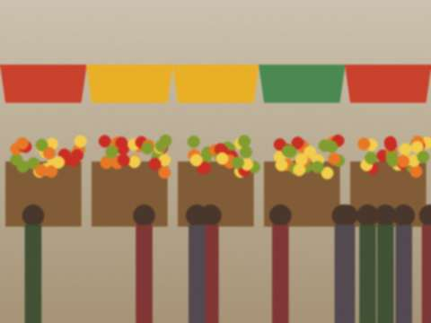

Sep142012
Friday, September 14th, 2012 at 7:20 pm by Saltanat Kubanychbekovna
The ministry sent us six computers for the new informatics room. They stand on the long table under a blue sheet because the dust here is like flour. The informatics teacher is a young man from Talas and he spends his lunch hour explaining to the director what a mouse is. The director says he knows what a mouse is. He keeps it on the wrong side of the keyboard.
The informatics room, under the blue sheet.
For my lessons I am thinking about the projector. Nobody says no. Nobody says when.
Posted in School | No Comments »
Apr222012
Sunday, April 22nd, 2012 at 5:45 pm by Saltanat Kubanychbekovna
We took the 8th classes to Aulie-Ata on the bus: the mausoleum, the mound, what is left of the Kokand fort. The caretaker of the mausoleum told the children the legend of the holy father better than any textbook. Then we ate samsa by the river and three boys fell in the Talas. Everybody survived.
On the way back we saw the Aulie-Ata cattle in the fields, the red ones. The children did not know that the breed has the name of the town. Now they know.
Posted in Our valley | No Comments »
Sep42011
Sunday, September 4th, 2011 at 7:15 pm by Saltanat Kubanychbekovna
New uniforms by the directive: navy blue, white shirts. The bazaar in Kyzyl-Adyr sold out in two days, the trader from Talas brought more on Thursday at double price. Half of my class still came in what they had. Nobody was sent home, thank God, the director is a reasonable man.
They look very serious in navy. Like little ministers. Then the bell rings and they are children again.
Posted in School | 1 Comment »
Aug142011
Sunday, August 14th, 2011 at 7:50 pm by Saltanat Kubanychbekovna
My mother reminds me that in 1962 there were uniforms too, brown dresses and black aprons, and the school director measured the skirts with a ruler. So uniforms are not new. What is new is the price. A set for a girl in the 5th class was 38 som at the bazaar this week, and a family with three children needs a month's saving.
At the school we have a box for uniforms that are too small. Parents bring and parents take, without names. I have put my nephew's old shirts there. The box is already empty twice.

The uniform stall at the Kyzyl-Adyr bazaar, last Saturday of August.
Posted in School | No Comments »
May252011
Wednesday, May 25th, 2011 at 12:30 pm by Saltanat Kubanychbekovna
The last bell in the school yard, the graduating class of 2011.
Today the last bell for my graduating class. Twenty-three children. Twenty-three white aprons, I counted, and twenty-three bunches of tulips from the bazaar. A girl handed me hers and said, "Eje, these are for your history." I put them in the jar on the teachers' desk.
Now we wait for the exams. They have the whole summer in front of them and no idea how long it is.
Posted in School | 1 Comment »